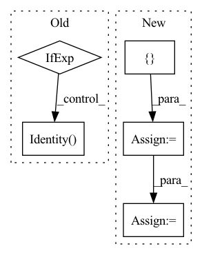

Pattern ID :364

Before Change
self.seq_len = seq_len
self.prob_survival = prob_survival
self.to_embed = nn.Embedding(num_tokens, dim) if exists(num_tokens) else nn.Identity()
self.layers = nn.ModuleList([Residual(PreNorm(dim, gMLPBlock(dim = dim, dim_ff = dim_ff, seq_len = seq_len, heads = heads, window = window))) for i in range(depth)])
self.to_logits = nn.Sequential(
After Change
self.to_embed = nn.Embedding(num_tokens, dim)
window = cast_tuple(window, depth)
layers = nn.ModuleList([])
for ind, w in zip(range(depth), window):
layer_blocks = nn.ModuleList([
PreNorm(dim, gMLPBlock(dim = dim, dim_ff = dim_ff, seq_len = seq_len, heads = heads, window = w))
])
if reversible:
layer_blocks.append(PreNorm(dim, gMLPBlock(dim = dim, dim_ff = dim_ff, seq_len = seq_len, heads = heads, window = w)))
layers.append(layer_blocks)
execute_klass = SequentialSequence if not reversible else ReversibleSequence
self.net = execute_klass(layers)
self.to_logits = nn.Sequential(
nn.LayerNorm(dim),
In pattern: SUPERPATTERN
Frequency: 4
Non-data size: 5
Instances
Fragment ID: 757130
Project Name: lucidrains/g-mlp-gpt
Commit Name: 7642e36ff19c6b299a77e5c1ace038e9e6726202
Time: 2021-05-20
Author: lucidrains@gmail.com
File Name: g_mlp_gpt/g_mlp_gpt.py
Class Name: gMLPGPT
Method Name: __init__
Parent Class: nn.Module
Fragment ID: 757123
Project Name: keio-bioinformatics/mxfold2
Commit Name: 68ef608a1f3045fae21ae3f7f0d12858b14bacbf
Time: 2019-12-01
Author: satoken@bio.keio.ac.jp
File Name: dnnfold/fold/layers.py
Class Name: CNNUnpairedLayer
Method Name: __init__
Parent Class: nn.Module
Fragment ID: 757122
Project Name: eora-ai/torchok
Commit Name: ab2534f05b48a529d03f8c28af2579245772f4e0
Time: 2022-07-11
Author: rashit.bayazitov.1995@gmail.com
File Name: src/models/modules/blocks/patch_embedding.py
Class Name: PatchEmbed
Method Name: __init__
Parent Class: nn.Module